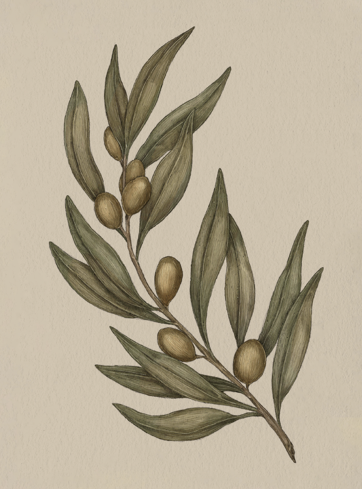

The Language of Flowers
Olive

Olive
Olea
Meaning
Peace
Origin
To "extend an olive branch" is to offer reconciliation and peace. This phrase comes from the Old
Testament story of Noah's Ark, in which Noah assembles an ark and fills it with pairs of animals
before a great flood. After many days at sea, he sends a dove to search for land, and the dove
returns with an olive branch in its beak, indicating land, and peace, are near.
Pair With
- Hawthorn and Rue to ask for forgiveness
- Queen Anne's lace as a housewarming gift